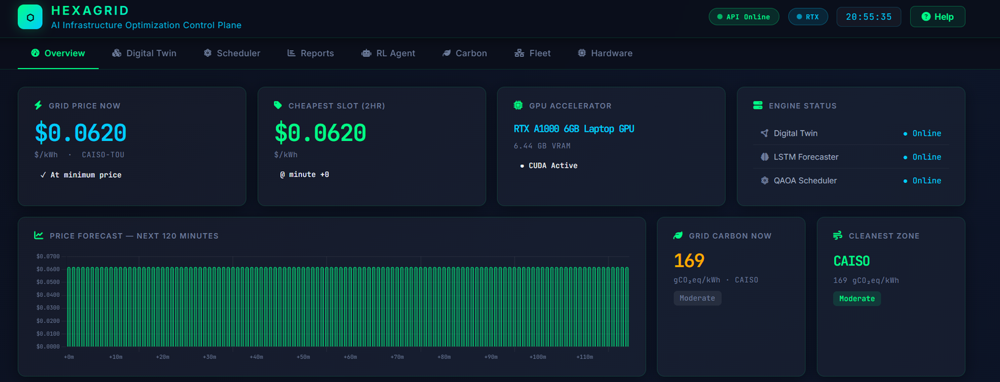
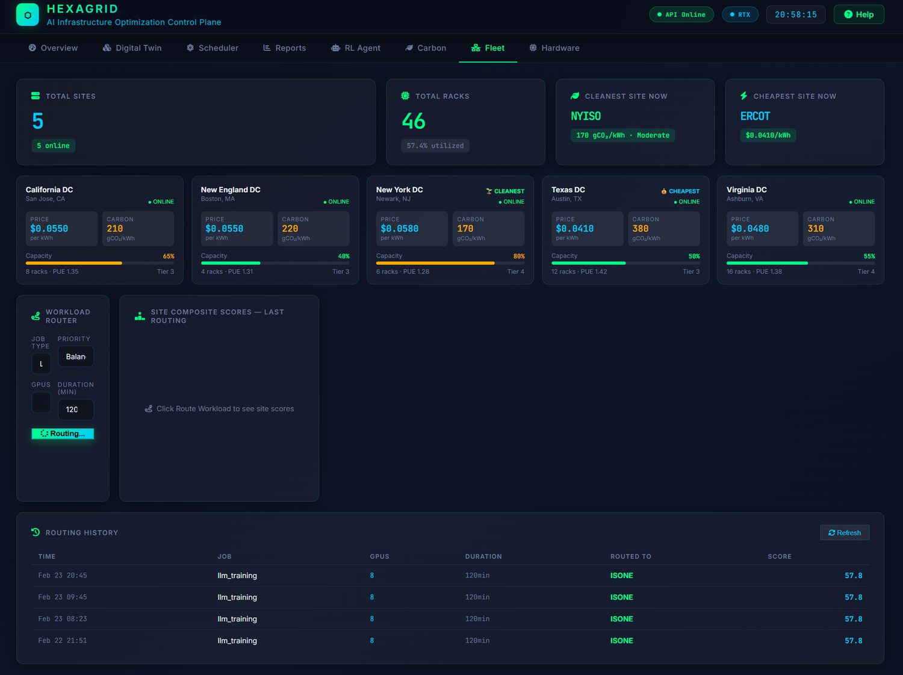
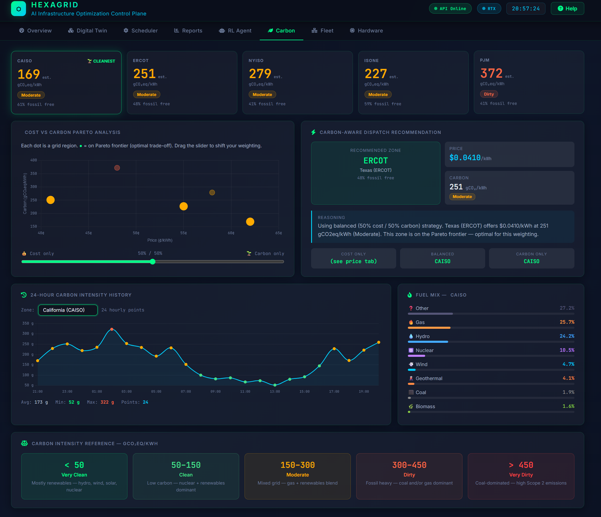
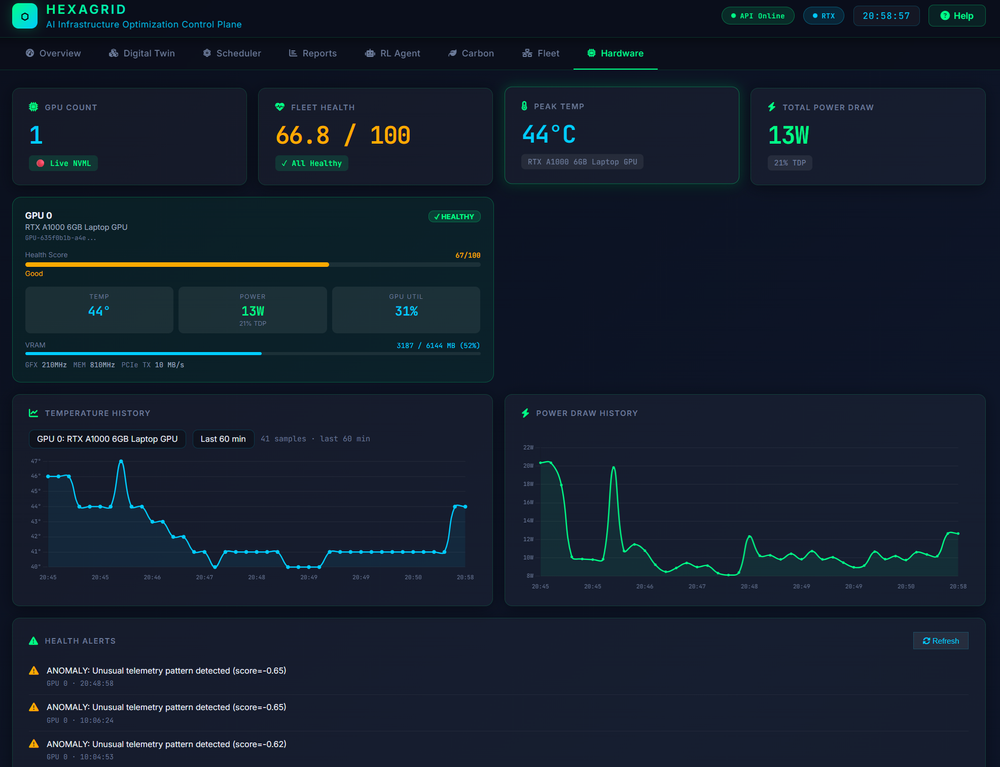

Architecture
What the operator actually sees.
Screenshots of the running dashboard, with a plain description of what each surface shows and what it does not. Where a view displays data from our benchmark rather than from a live feed, that is stated on the view.

One surface for price, load and health
The overview consolidates grid pricing, current workload state and infrastructure health into a single screen, so an operator can see cost exposure and system status without moving between tools.
This is the default landing view and the one most operators keep open.

Five grid regions, side by side
Price and carbon intensity for CAISO, ERCOT, NYISO, ISO-NE and PJM, scored and displayed together. If you run in more than one place, this is where you see how differently the same hour is priced across them.
This view compares regions. It does not move work between them. Cross-region scheduling needs a transfer-cost model we have not built, and until we do, HexaGrid schedules within a single region only.

Emissions as a scheduling input
Carbon intensity is treated as a quantity that changes hour by hour, not an annual reporting figure. The scheduler can be pointed at the cheap end or the clean end of that trade, and reports both outcomes in their own units — dollars and tonnes, never merged into one score.
The carbon signal behind these figures is synthetic, scaled to an EPA annual average rather than measured. The mechanism is real; the magnitude is unverified until it runs on measured intensity data.

Nothing gets scheduled onto struggling hardware
NVML telemetry polls every GPU on a ten-second cycle — power draw, utilisation, temperature, memory, ECC counts, fan speed — and an anomaly detector watches for combined-metric failure signatures that no single threshold would catch.
Health feeds back into scheduling. A saving that costs you a GPU is not a saving.
See it against your own cluster
The dashboard runs alongside your infrastructure with no agents and no hardware changes. The fastest way to know whether HexaGrid is useful to you is to point it at a real workload and look at the same screens with your own numbers in them.